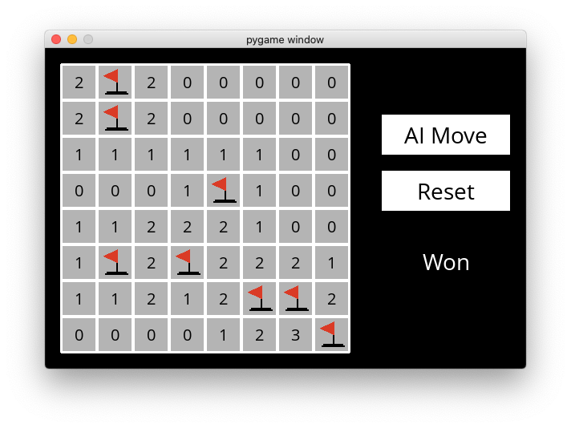
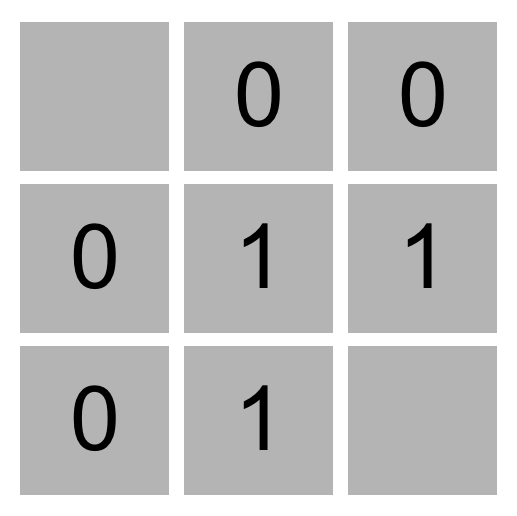
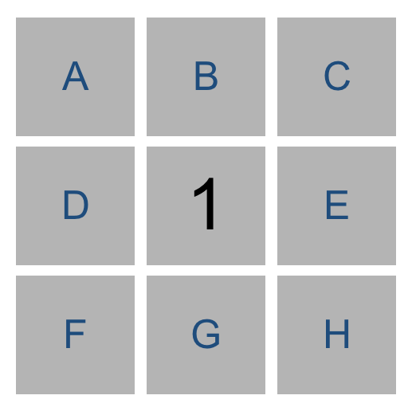
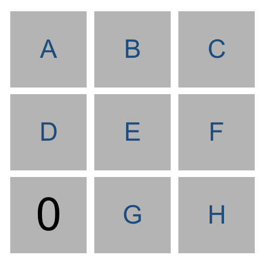
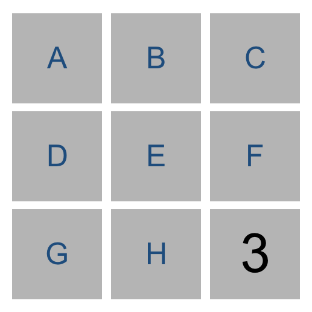
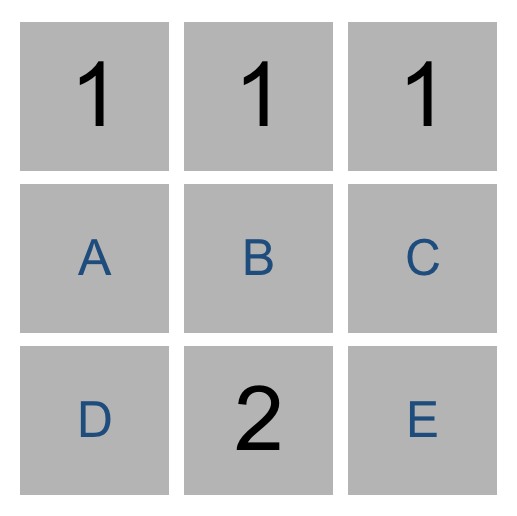

Minesweeper
The latest version of Python you should use in this 课程 is Python 3.12.
Write an AI to play Minesweeper.

When to Do It
How to Get Help
背景
Minesweeper
Minesweeper is a puzzle game that consists of a grid of cells, where some of the cells contain hidden “mines.” Clicking on a cell that contains a mine detonates the mine, and causes the user to lose the game. Clicking on a “safe” cell (i.e., a cell that does not contain a mine) reveals a number that indicates how many neighboring cells – where a neighbor is a cell that is one square to the left, right, up, down, or diagonal from the given cell – contain a mine.
In this 3x3 Minesweeper game, for 示例, the three 1 values indicate that each of those cells has one neighboring cell that is a mine. The four 0 values indicate that each of those cells has no neighboring mine.

Given this information, a logical player could conclude that there must be a mine in the lower-right cell and that there is no mine in the upper-left cell, for only in that case would the numerical labels on each of the other cells be accurate.
The goal of the game is to flag (i.e., identify) each of the mines. In many implementations of the game, including the one in this 项目, the player can flag a mine by right-clicking on a cell (or two-finger clicking, depending on the computer).
Propositional Logic
Your goal in this 项目 will be to build an AI that can play Minesweeper. Recall that knowledge-based agents make decisions by considering their knowledge base, and making inferences based on that knowledge.
One way we could represent an AI’s knowledge 关于 a Minesweeper game is by making each cell a propositional variable that is true if the cell contains a mine, and false otherwise.
What information does the AI have access to? Well, the AI would know every 时间 a safe cell is clicked on and would get to see the number for that cell. Consider the following Minesweeper board, where the middle cell has been revealed, and the other cells have been labeled with an identifying letter for the sake of 讨论.

What information do we have now? It appears we now know that one of the eight neighboring cells is a mine. Therefore, we could write a logical expression like the below to indicate that one of the neighboring cells is a mine.
Or(A, B, C, D, E, F, G, H)
But we actually know 更多 than what this expression says. The above logical sentence expresses the idea that at least one of those eight variables is true. But we can make a stronger statement than that: we know that exactly one of the eight variables is true. This gives us a propositional logic sentence like the below.
Or(
And(A, Not(B), Not(C), Not(D), Not(E), Not(F), Not(G), Not(H)),
And(Not(A), B, Not(C), Not(D), Not(E), Not(F), Not(G), Not(H)),
And(Not(A), Not(B), C, Not(D), Not(E), Not(F), Not(G), Not(H)),
And(Not(A), Not(B), Not(C), D, Not(E), Not(F), Not(G), Not(H)),
And(Not(A), Not(B), Not(C), Not(D), E, Not(F), Not(G), Not(H)),
And(Not(A), Not(B), Not(C), Not(D), Not(E), F, Not(G), Not(H)),
And(Not(A), Not(B), Not(C), Not(D), Not(E), Not(F), G, Not(H)),
And(Not(A), Not(B), Not(C), Not(D), Not(E), Not(F), Not(G), H)
)
That’s quite a complicated expression! And that’s just to express what it means for a cell to have a 1 in it. If a cell has a 2 or 3 or some other value, the expression could be even longer.
Trying to perform model checking on this type of problem, too, would quickly become intractable: on an 8x8 grid, the size Microsoft uses for its Beginner level, we’d have 64 variables, and therefore 2^64 possible models to check – far too many for a computer to compute in any reasonable amount of 时间. We need a better representation of knowledge for this problem.
Knowledge Representation
Instead, we’ll represent each sentence of our AI’s knowledge like the below.
{A, B, C, D, E, F, G, H} = 1
Every logical sentence in this representation has two parts: a set of cells on the board that are involved in the sentence, and a number count, representing the count of how many of those cells are mines. The above logical sentence says that out of cells A, B, C, D, E, F, G, and H, exactly 1 of them is a mine.
Why is this a useful representation? In part, it lends itself well to certain types of inference. Consider the game below.

Using the knowledge from the lower-left number, we could construct the sentence {D, E, G} = 0 to mean that out of cells D, E, and G, exactly 0 of them are mines. Intuitively, we can infer from that sentence that all of the cells must be safe. By extension, any 时间 we have a sentence whose count is 0, we know that all of that sentence’s cells must be safe.
Similarly, consider the game below.

Our AI would construct the sentence {E, F, H} = 3. Intuitively, we can infer that all of E, F, and H are mines. 更多 generally, any 时间 the number of cells is equal to the count, we know that all of that sentence’s cells must be mines.
In general, we’ll only want our sentences to be 关于 cells that are not yet known to be either safe or mines. This means that, once we know whether a cell is a mine or not, we can update our sentences to simplify them and potentially draw new conclusions.
For 示例, if our AI knew the sentence {A, B, C} = 2, we don’t yet have enough information to conclude anything. But if we were told that C were safe, we could remove C from the sentence altogether, leaving us with the sentence {A, B} = 2 (which, incidentally, does let us draw some new conclusions.)
Likewise, if our AI knew the sentence {A, B, C} = 2, and we were told that C is a mine, we could remove C from the sentence and decrease the value of count (since C was a mine that contributed to that count), giving us the sentence {A, B} = 1. This is logical: if two out of A, B, and C are mines, and we know that C is a mine, then it must be the case that out of A and B, exactly one of them is a mine.
If we’re being even 更多 clever, there’s one final type of inference we can do.

Consider just the two sentences our AI would know based on the top middle cell and the bottom middle cell. From the top middle cell, we have {A, B, C} = 1. From the bottom middle cell, we have {A, B, C, D, E} = 2. Logically, we could then infer a new piece of knowledge, that {D, E} = 1. After all, if two of A, B, C, D, and E are mines, and only one of A, B, and C are mines, then it stands to reason that exactly one of D and E must be the other mine.
更多 generally, any 时间 we have two sentences set1 = count1 and set2 = count2 where set1 is a subset of set2, then we can construct the new sentence set2 - set1 = count2 - count1. Consider the 示例 above to ensure you understand why that’s true.
So using this method of representing knowledge, we can write an AI agent that can gather knowledge 关于 the Minesweeper board, and hopefully select cells it knows to be safe!
入门
- 下载 the distribution code from https://cdn.cs50.net/ai/2023/x/项目/1/minesweeper.zip and unzip it.
- Once in the directory for the 项目, run
pip3 install -r requirements.txtto install the 必需 Python package (pygame) for this 项目 if you don’t already have it installed.
Understanding
There are two main files in this 项目: runner.py and minesweeper.py. minesweeper.py contains all of the logic the game itself and for the AI to play the game. runner.py has been implemented for you, and contains all of the code to run the graphical interface for the game. Once you’ve completed all the 必需 functions in minesweeper.py, you should be able to run python runner.py to play Minesweeper (or let your AI play for you)!
Let’s 打开 up minesweeper.py to understand what’s provided. There are three classes defined in this file, Minesweeper, which handles the gameplay; Sentence, which represents a logical sentence that contains both a set of cells and a count; and MinesweeperAI, which handles inferring which moves to make based on knowledge.
The Minesweeper class has been entirely implemented for you. Notice that each cell is a pair (i, j) where i is the row number (ranging from 0 to height - 1) and j is the column number (ranging from 0 to width - 1).
The Sentence class will be used to represent logical sentences of the form described in the 背景. Each sentence has a set of cells within it and a count of how many of those cells are mines. The class also contains functions known_mines and known_safes for determining if any of the cells in the sentence are known to be mines or known to be safe. It also contains functions mark_mine and mark_safe to update a sentence in response to new information 关于 a cell.
Finally, the MinesweeperAI class will implement an AI that can play Minesweeper. The AI class keeps track of a number of values. self.moves_made contains a set of all cells already clicked on, so the AI knows not to pick those again. self.mines contains a set of all cells known to be mines. self.safes contains a set of all cells known to be safe. And self.knowledge contains a list of all of the Sentences that the AI knows to be true.
The mark_mine function adds a cell to self.mines, so the AI knows that it is a mine. It also loops over all sentences in the AI’s knowledge and informs each sentence that the cell is a mine, so that the sentence can update itself accordingly if it contains information 关于 that mine. The mark_safe function does the same thing, but for safe cells instead.
The remaining functions, add_knowledge, make_safe_move, and make_random_move, are left up to you!
规格说明
Complete the implementations of the Sentence class and the MinesweeperAI class in minesweeper.py.
In the Sentence class, complete the implementations of known_mines, known_safes, mark_mine, and mark_safe.
- The
known_minesfunction should return a set of all of the cells inself.cellsthat are known to be mines. - The
known_safesfunction should return a set of all the cells inself.cellsthat are known to be safe. - The
mark_minefunction should first check to see ifcellis one of the cells included in the sentence.- If
cellis in the sentence, the function should update the sentence so thatcellis no longer in the sentence, but still represents a logically correct sentence given thatcellis known to be a mine. - If
cellis not in the sentence, then no action is necessary.
- If
- The
mark_safefunction should first check to see ifcellis one of the cells included in the sentence.- If
cellis in the sentence, the function should update the sentence so thatcellis no longer in the sentence, but still represents a logically correct sentence given thatcellis known to be safe. - If
cellis not in the sentence, then no action is necessary.
- If
In the MinesweeperAI class, complete the implementations of add_knowledge, make_safe_move, and make_random_move.
-
add_knowledgeshould accept acell(represented as a tuple(i, j)) and its correspondingcount, and updateself.mines,self.safes,self.moves_made, andself.knowledgewith any new information that the AI can infer, given thatcellis known to be a safe cell withcountmines neighboring it.- The function should mark the
cellas one of the moves made in the game. - The function should mark the
cellas a safe cell, updating any sentences that contain thecellas well. - The function should add a new sentence to the AI’s knowledge base, based on the value of
cellandcount, to indicate thatcountof thecell’s neighbors are mines. Be sure to only include cells whose state is still undetermined in the sentence. - If, based on any of the sentences in
self.knowledge, new cells can be marked as safe or as mines, then the function should do so. - If, based on any of the sentences in
self.knowledge, new sentences can be inferred (using the subset method described in the 背景), then those sentences should be added to the knowledge base as well. - 笔记 that any 时间 that you make any change to your AI’s knowledge, it 五月 be possible to draw new inferences that weren’t possible before. Be sure that those new inferences are added to the knowledge base if it is possible to do so.
- The function should mark the
-
make_safe_moveshould return a move(i, j)that is known to be safe.- The move returned must be known to be safe, and not a move already made.
- If no safe move can be guaranteed, the function should return
None. - The function should not modify
self.moves_made,self.mines,self.safes, orself.knowledge.
-
make_random_moveshould return a random move(i, j).- This function will be called if a safe move is not possible: if the AI doesn’t know where to move, it will choose to move randomly instead.
- The move must not be a move that has already been made.
- The move must not be a move that is known to be a mine.
- If no such moves are possible, the function should return
None.
提示
- Be sure you’ve thoroughly 阅读 the 背景 小组课 to understand how knowledge is represented in this AI and how the AI can make inferences.
- If feeling 较少 comfortable with object-oriented 编程, you 五月 find Python’s documentation on classes helpful.
- You can find some common
setoperations in Python’s documentation on sets. - When implementing
known_minesandknown_safesin theSentenceclass, consider: under what circumstances do you know for sure that a sentence’s cells are safe? Under what circumstances do you know for sure that a sentence’s cells are mines? -
add_knowledgedoes quite a lot of work, and will likely be the longest function you write for this 项目 by far. It will likely be helpful to implement this function’s behavior one step at a 时间. - You’re 欢迎 to add new methods to any of the classes if you would like, but you should not modify any of the existing functions’ definitions or arguments.
- When you run your AI (as by clicking “AI Move”), 笔记 that it will not always win! There will be some cases where the AI must guess, because it lacks sufficient information to make a safe move. This is to be expected.
runner.pywill print whether the AI is making a move it believes to be safe or whether it is making a random move. - Be careful not to modify a set while iterating over it. Doing so 五月 result in errors!
测试
If you’d like, you can execute the below (after setting up check50 on your system) to evaluate the correctness of your code. This isn’t obligatory; you can simply 提交 following the steps at the end of this 规格说明, and these same tests will run on our server. Either way, be sure to compile and test it yourself as well!
check50 ai50/projects/2024/x/minesweeper
Execute the below to evaluate the style of your code using style50.
style50 minesweeper.py
Remember that you 五月 not import any modules (other than those in the Python standard library) other than those explicitly authorized herein. Doing so will not only prevent check50 from running, but will also prevent submit50 from scoring your 作业, since it uses check50. If that happens, you’ve likely imported something disallowed or otherwise modified the distribution code in an unauthorized manner, per the 规格说明. There are certainly 工具 out there that trivialize some of these 项目, but that’s not the goal here; you’re learning things at a lower level. If we don’t say here that you can use them, you can’t use them.
如何提交
- Visit this link, log in with your GitHub account, and click Authorize cs50. Then, check the box indicating that you’d like to grant 课程 工作人员 access to your submissions, and click Join 课程.
-
Install Git and, optionally, install
submit50. - If you’ve installed
submit50, executesubmit50 ai50/projects/2024/x/minesweeperOtherwise, using Git, push your work to
https://github.com/me50/USERNAME.git, whereUSERNAMEis your GitHub username, on a branch calledai50/projects/2024/x/minesweeper.
If you 提交 your code directly using Git, rather than submit50, do not include files or folders other than those you are actually instructed to modify in the 规格说明 above. (That is to say, don’t upload your entire directory!)
Work should be graded within five minutes. You can then go to https://cs50.me/cs50ai to view your current progress!